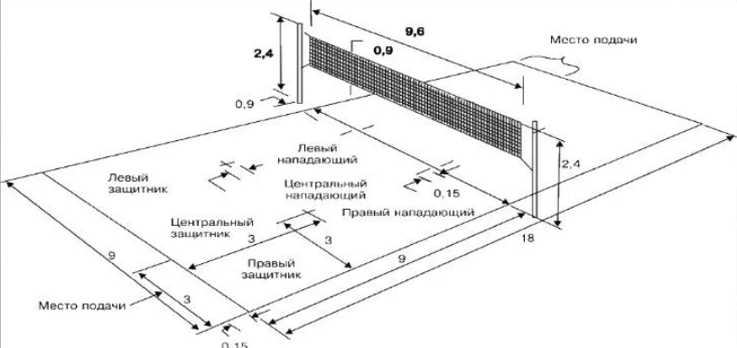

Правила игры в волейбол
Волейбол — это динамичная командная игра, в которой две команды по 6 игроков соревнуются на площадке, разделённой сеткой. Основная цель — направить мяч на сторону соперника так, чтобы он коснулся пола, или заставить соперника совершить ошибку.
Схематическое изображение волейбольной площадки и основных правил.
Основные правила волейбола
Команды
На площадке одновременно находятся 6 игроков от каждой команды. Допускается до 6 запасных игроков на скамейке. Замены разрешены, но с ограничениями: один игрок может быть заменён только определённое количество раз за партию (обычно до 6 замен на команду). Либеро — специализированный игрок для защиты, который может заменять любого игрока задней линии без ограничений по количеству замен.
Сетка
Высота сетки:
- Для мужчин: 2,43 метра.
- Для женщин: 2,24 метра.
- Для юниоров и детей высота может быть ниже в зависимости от возраста и уровня подготовки.
Ширина сетки: 1 метр, длина — 9,5–10 метров. Антенны устанавливаются на сетке для обозначения зоны, через которую мяч должен перелетать. Мяч, задевший антенну, считается вышедшим.
Счёт
Матч играется до 3 выигранных партий (лучший из 5). Каждая партия играется до 25 очков, но с обязательной разницей в 2 очка. Если счёт достигает 24:24, игра продолжается до достижения разницы в 2 очка (например, 26:24). Пятая партия (тай-брейк) играется до 15 очков, также с разницей в 2 очка.
Подача
Игрок подаёт мяч из-за задней линии (лицевой линии площадки). Мяч должен быть подброшен или выпущен из руки перед ударом. Подача может быть верхней (с ударом сверху) или нижней (с ударом снизу). Мяч должен перелететь через сетку и приземлиться на стороне соперника.
Ошибки при подаче:
- Заступ за линию при подаче.
- Мяч не перелетает через сетку.
- Мяч касается антенны или выходит за пределы площадки.
Розыгрыш
Команда может касаться мяча не более 3 раз перед тем, как отправить его на сторону соперника. Один игрок не может касаться мяча дважды подряд, за исключением блокирования. Блокирование не считается за одно из трёх касаний. Мяч может быть отбит любой частью тела, включая ноги (по современным правилам).
Блокирование
Блокировать могут только игроки передней линии (номера 2, 3, 4). Блокирующие могут касаться мяча на стороне соперника, если это не мешает игре соперника. Блок не считается за касание, поэтому после блока команда может коснуться мяча ещё три раза. Игроки задней линии не могут блокировать или участвовать в завершённом блоке.
Ошибки
Основные ошибки в волейболе:
- Касание сетки во время игры, если это мешает розыгрышу.
- Заступ на площадку соперника (кроме случаев, связанных с инерцией после удара).
- Двойное касание мяча одним игроком (кроме блокирования).
- Удар по мячу более 3 раз перед отправкой на сторону соперника.
- Мяч задевает антенну или выходит за пределы площадки.
- Задержка мяча (мяч должен быть отбит, а не брошен или задержан).
- Неправильная замена (замены должны происходить через специальную зону и с разрешения судьи).
Дополнительные правила
Тайм-ауты: Каждая команда имеет право на два тайм-аута по 30 секунд в каждой партии. Технический тайм-аут: В официальных матчах при достижении одной из команд 8 и 16 очков в партии автоматически берётся технический тайм-аут (60 секунд). Жёлтые и красные карточки: Судья может показать жёлтую карточку за предупреждение, красную — за удаление игрока на одно очко, а две жёлтые карточки — за удаление до конца партии.
Дополнительные правила
Либеро
В команде может быть специальный игрок — либеро, который играет только в защите и не может атаковать или блокировать. Либеро легко отличить по форме другого цвета.
Тайм-ауты
Каждая команда имеет право на два тайм-аута по 30 секунд в каждой партии. Тренер может запросить тайм-аут для обсуждения тактики.
Замены
Команда может сделать до 6 замен в партии. Один игрок может быть заменён несколько раз, но только на одного и того же запасного.
Жесты судей
Судьи используют специальные жесты для обозначения нарушений, таких как касание сетки, заступ, двойное касание и другие.
Зоны на площадке
Площадка разделена на 6 зон, и игроки должны перемещаться по часовой стрелке после каждой смены подачи.
Для более подробного изучения правил, посетите официальный сайт:
Официальные правила волейбола